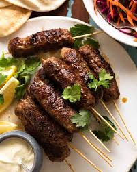

Kofta is a popular dish in many cuisines, especially in the Middle East, South Asia, and the Balkans. It typically consists of ground meat (such as beef, lamb, chicken, or even fish) mixed with herbs, spices, and onions, shaped into balls or patties, and then grilled, fried, or baked. The word "kofta" comes from the Persian "koftan," which means to pound or grind.
Ingrediants
500g ground lamb, beef, or a mix (you can also use ground chicken or turkey)
small onion, finely grated or minced
2-3 cloves garlic, minced
1/4 cup fresh parsley, finely chopped
1/4 cup fresh cilantro, finely chopped
1 teaspoon ground cumin
1 teaspoon ground coriander
1/2 teaspoon ground cinnamon
1/4 teaspoon cayenne pepper (adjust to taste, optional)
Salt and pepper to taste
Prepare the Kofta Mixture:
In a large bowl, combine the ground meat, grated/minced onion, minced garlic, chopped parsley, chopped cilantro, ground cumin, ground coriander, cinnamon, allspice (if using), cayenne pepper, salt, and pepper.
Mix everything together well using your hands until the mixture is thoroughly combined and holds together. If the mixture is too wet, you can add a little breadcrumbs to help bind it.
Form the Kofta:
Take a small portion of the mixture and roll it between your palms to form a small, elongated meatball (about 1.5 inches long). Repeat with the remaining mixture.
Cook the Kofta:
Heat some oil in a large skillet or frying pan over medium-high heat.
Working in batches, place the kofta in the skillet and cook for about 4-5 minutes, turning occasionally, until browned on all sides and cooked through. Remove from the skillet and set aside.
Prepare the Sauce:
In the same skillet (you can remove excess oil if needed, leaving about 1 tablespoon), add the chopped onion and cook until softened and translucent, about 5 minutes.
Add the minced garlic and cook for another minute until fragrant.
Simmer the Kofta:
Stir in the crushed tomatoes/tomato sauce, ground cumin, ground coriander, paprika, turmeric, salt, pepper, and water/broth. Bring to a simmer.
Finish Cooking:
Carefully add the cooked kofta back into the skillet with the sauce. Spoon some of the sauce over the kofta to coat them evenly.
Cover the skillet and simmer gently for about 15-20 minutes, stirring occasionally, until the flavors meld together and the kofta are heated through.
Serve:

For More Details Visit The Following Vidoe